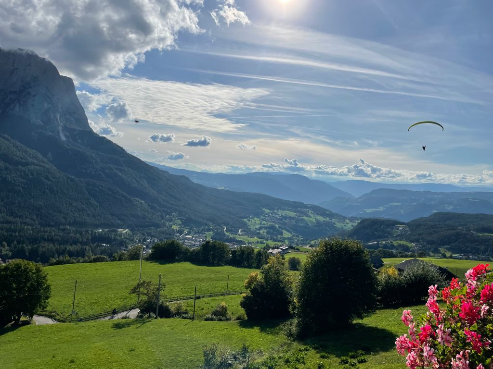

Hi, ich bin Sascha Mai, ein leidenschaftlicher Paragliding Pilot und Abenteurer. Im Jahr 2010 habe ich die Mongol Rallye von Barcelona nach Ulan Bataar gefahren, ein aufregendes Erlebnis, das meinen Entdeckergeist weiter entfacht hat.
Meine Projekte
